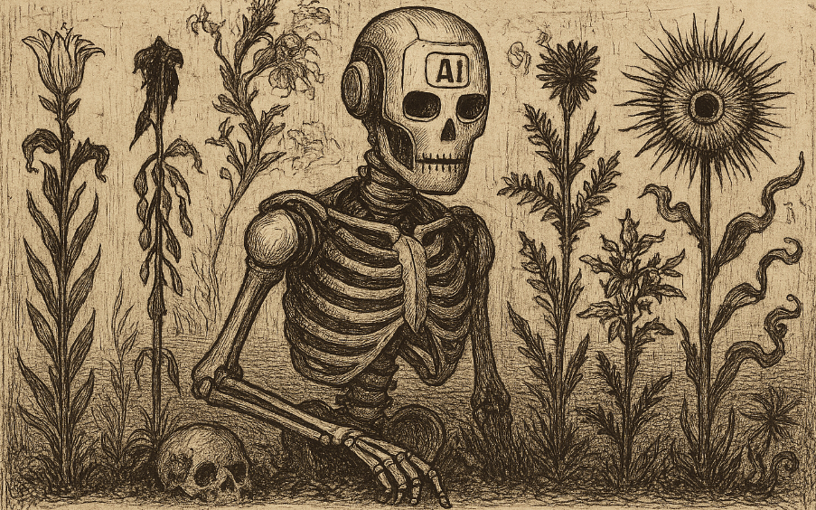

IA, Spleen & Idéal

Un regard sur le monde
Nous vivons actuellement une révolution que nous ne maîtrisons pas.
Il y a quelques mois, j’avais écrit une première partie de mes réflexions sur l’IA, que je comparais alors aux Fleurs du Mal modernes. Une référence à la dualité du recueil de Baudelaire, la beauté et l’ombre, la fascination et le malaise.
J’y exprimais une frustration profonde, l’utilisation intensive de l’intelligence artificielle, en particulier dans le milieu scolaire. Trop vite, elle est devenue un cerveau de substitution, un raccourci dans l’éducation. Et cela m’inquiète, l’apprentissage se transforme peu à peu en apprentissage par assistance, au détriment du développement de la pensée critique.
Je ne suis pas un expert, seulement un passionné qui observe et vit ces bouleversements technologiques. J’essaie de rester attentif à ce que j’utilise, parce que je veux garder le contrôle, conserver le recul nécessaire pour éviter de sombrer dans un abrutissement confortable.
Je fais aussi attention à ma vie privée, à ce que je livre à Internet. Parce qu’Internet est un trou noir : il se nourrit de nos données, et sa croissance semble illimitée. Mon propre rythme d’évolution n’est sans doute pas aussi rapide que celui du monde technologique, mais je prends le temps d’observer ce qu’il engloutit.
LinkedIn est devenu un autre trou noir. Il s’alimente d’informations sur l’IA en continu. Peut-être suis-je bombardé d’articles et de posts sur le sujet parce que je m’y intéresse, mais le flux est devenu étouffant. C’est lassant, au point de saturer complètement mes lectures.
Elle est désormais au cœur de nos vies.
Agents, assistants, voire confidents… je lis de tout. Et plus je lis,
plus je constate une chose :
nous ne sommes pas prêts.
Les dangers collectifs que je perçois
Ce qui me paraît logique ne l’est pas forcément pour un autre.
Pendant que je fais attention à la formulation de mes prompts, que
j’anonymise mes informations pour éviter des dérives incontrôlées,
d’autres parlent à leur assistant comme à un ami. Et ça me questionne.
Loin de moi l’idée de paraître prétentieux, j'étudie dans ce domaine, mais je sais qu’en matière de protection des données, personne ne peut prétendre à une maîtrise absolue. Même avec de l’expertise, il reste toujours une part d’incertitude, parce que l’humain aura toujours des failles.
Le problème, c’est qu’on n’anticipe pas assez le changement.
Parfois ce n’est pas grave, on tombe, on se relève, on apprend. Mais
j’ai peur que la complexité du monde dans lequel nous évoluons ne
laisse pas toujours cette marge d’erreur. Une chute pourrait avoir
bien plus de conséquences.
Aujourd’hui, il s’agit d’extraire de la connaissance d’un système qui
grandit sans cesse.
Nous ne sommes plus face à de simples algorithmes déterministes ou
statistiques (loin des profils numériques invisibles que les réseaux sociaux
dressaient de nous en secret..). Nous sommes passés à la vitesse supérieure avec des modèles
prédictifs capables de déduire ce que nous “pensons”, ce que nous
“ressentons”, et de s’adapter en fonction de notre comportement.
Il n’y a pas si longtemps, on s’amusait à demander à Siri de nous faire une blague (qui ne comprenait d'ailleurs qu’une fois sur deux ce qu’on lui disait).
Aujourd’hui, on discute avec des IA en leur parlant comme à des êtres dotés d’intelligence émotionnelle (« Peux-tu faire ceci stp ? Qu’en penses-tu ? Que me conseillerais-tu ? »)
C’est fou, non ?
Et je n'étais pas au bout de mes surprises
Quand nos réflexes comportementaux nous trahissent face à l'IA dans
notre travail ou dans un moment de doute personnel. D’autres
s’enferment dans une relation virtuelle qui peut vite tourner au
cauchemar.
Oui, Internet reste un terrain exceptionnel pour ceux qui savent l’utiliser comme un outil sain, un complément à une vie sociale déjà riche. Mais il y avait déjà, avant, des personnes en grande détresse sociale ou affective, qui trouvaient dans le numérique un refuge confortable.. Mais qui les empêchait d’exister "IRL".
Aujourd’hui, l’IA va plus loin. Elle remplace peu à peu les relations
humaines.
On se plaint souvent que l’IA soit trop friendly, qu’elle aille
toujours dans notre sens. Mais ne serait-ce pas justement la boîte de
Pandore pour celles et ceux qui peinent à s’adapter socialement, que
ce soit dans le “réel” ou dans le “virtuel” ?
Des personnes développent des relations très intimes avec des agents conversationnels. La réalité s'inspire désormais de la fiction, le film Her s'intègre de plus en plus dans nos codes sociaux.
Et ce phénomène n'est pas isolé...
Récemment, j'ai découvert qu'il existait des comptes entiers dédiés
aux astuces IA.
Je n’ai pas de réseaux sociaux personnels, je ne suis pas les tendances. Mais j’ai quelques comptes totalement anonymes, uniquement pour consulter des threads ou accéder à certaines infos. Et c’est là que je suis tombé sur un profil qui enchaînait les contenus astuces IA”… pour absolument TOUT dans la vie.
Réfléchir, lire, répondre aux messages, modifier ses photos, publier sur ses réseaux, et même discuter avec des agents conversationnels pour (je cite) « te remonter le moral ». On pousse le vice jusqu’au bout.
Et dans les commentaires, on retrouve de tout, des adultes, mais aussi des enfants et des adolescents. C’est là que je vois un réel danger sociétal et générationnel.
Parce qu’on ne parle plus seulement d’un usage ponctuel ou réfléchi, mais d’une surconsommation organisée. On incite des foules entières à déléguer chaque geste, chaque réflexion, chaque interaction à des outils automatisés.
Et sans oublier les données personnelles que tout cela pompe au passage. Car utiliser une dizaine d’IA différentes, c’est multiplier autant de fois le don de nos informations à des plateformes variées, dont on ignore presque tout. C’est une fuite continue, massive, mais banalisée.
(je note tout de même l'audace de certains de ces créateurs qui, dans leur grande bonté, nous préviennent des IA dont il faut se méfier parce qu'elles prennent "des données")
Ce qu'il faudra garder en tête
Je parle de l'IA de façon brouillonne.
Mon objectif n’était pas de travailler le sujet en profondeur, mais
simplement de poser mes pensées brutes. Une vision générale autour de
ces deux mots devenus si populaires :
Intelligence Artificielle.
Pardonnez mon imprécision dans certains termes, j’essaie seulement de dresser un portrait du paysage actuel, de partager mes questionnements et mes ressentis à travers les yeux d’un passionné.
Mais une chose est sûre :
l’éthique ne doit pas être oubliée.
Nous pourrions très vite basculer dans un monde dystopique, où la
frontière entre l’être sensible et l’insensible s’efface.
Il faudra absolument mettre en place des régulations pour éviter d’entraîner nos sociétés dans un brouillard sans repères.
Rester structuré est indispensable.